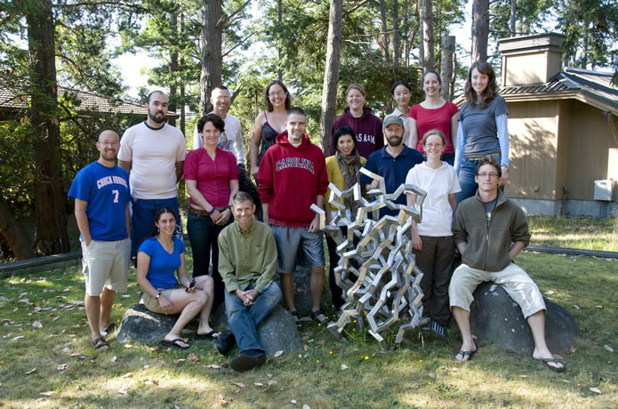

Estuarine & Coastal Fluid Dynamics Summer School 2009University of Washington Friday Harbor Laboratories, San Juan Island, WA, USA Instructors:
|
 |
| This is a 5-week summer school for physical oceanography grad students. It consists of lectures by MacCready and Geyer on fundamental fluid mechanics at estuarine and coastal scales. We stress ideas of stratified turbulence, internal hydraulics, tidal and tidally-averaged estuarine circulation, and river plumes. This conceptual base is broadened with lectures from 5 distinguished visiting scientists. Students do research projects using observations and modeling at three nearby field sites, culminating in a short written report and talk at the end. | |
VISITORS
TA: Sally Warner (UW) Postdoc Assistant: Dave Sutherland (UW) STUDENTS
|
|